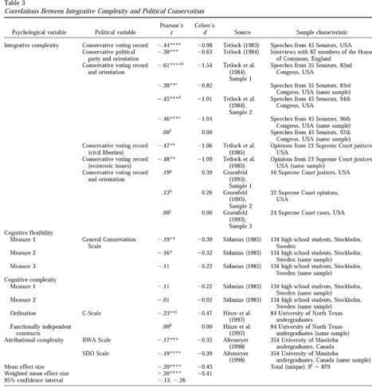

收录于合集
文献来源：Jost, John T, et al.“Political conservatism as motivated social cognition. " Psychological Bulletin 129.3(2003):339.
作者简介： Jhon T. Jost ，纽约大学心理学与政治学教授、社会与政治行为研究中心副主任，原国际政治心理学学会主席。他的研究方向包括偏见、刻板印象与意识形态。个人主页：http://psych.nyu.edu/jost/
****
一旦人们承认了意识形态，世界就分成了自由派（左）和保守派（右）。无论是环保、死刑还是同性恋，人们对具体政治议题的态度都可以按照自由 -保守的类型学排列。自由派追求变革、崇尚平等、宽容异己，保守派则安于现状、维护等级、敌视异类。那么，人们为什么会有左右之别？所谓保守派到底在“保守”什么？他们的“保守”是否一成不变？他们为何“保守”？带着这一系列问题，原文作者回顾并整理了海量的政治学和心理学文献，观察和提炼了近百次实证研究（横跨12个国家，包含22818个样本），吸纳了数十种既有理论与假设，最终发展出一套描述和解释保守主义的综合性范式。此文可谓政治心理学研究中“大力出奇迹”的典范。
保守与保守主义
近代以来，意识形态一直是人类社科学中最大的谜题。无数的历史学家、政治学家、社会学家、心理学家乃至自然科学研究者和新闻工作者都对保守主义进行过解读。在作者看来，保守主义是由两个核心命题和若干外围特征组成的。保守主义的第一个核心命题在于抗拒甚至恐惧改变。对于改变的不同态度直接划分了人们的政治派别，在一点上政治理论和实证研究的结果基本吻合。保守主义的第二个核心命题在于不平等。保守派普遍认为，任何社会都无法规避等级制度，而挑战等级制度就是在破坏社会秩序。在历史发展中，人类社会不断朝着平等自由进化。因此，在大多数时候，平等被认为是进步的，而不平等则是传统的。而保守派试图“保守”的，正是一种不平等的社会现状。当然，保守主义的这两个核心命题并不总是相容。很多前共产主义国家的领导人追求平等、力求破除一切等级差异，但同时他们又顽固不化、不愿意与时俱进。
在具体的历史情境中，保守主义还会表现出若干的外围特征，譬如强调秩序与稳定、偏好渐进变迁、遵从传统习俗、崇拜权威领导、宣扬严刑峻法等等。根据作者观察，美国六十年代的保守主义主要表现为支持越南战争和反对民权运动，九十年代的保守主义则表现为对罪犯的严厉惩罚。而在战后欧洲，保守主义则更多地与反共联系在一起。
保守主义的既有解释
那么，人们为什么会拥抱保守主义？根据作者的梳理，目前文献中关于保守主义生成原因的解释可以分为三类：心理特质论、认知需求论和集体理性论。
心理特质论认为，保守主义的根源在于人们各不相同的心理特质。一部分人的人格就是保守的，他们的政治态度与政治行为也自然是保守的。一般认为，人格的形成要早于政治社会化，甚至在童年时期就已经定型。因此，保守主义虽然表现于政治，却来源于个体早年的日常生活。在心理特质论中，（a）威权人格理论认为一部分人天然地敬畏和崇拜权威，不愿意看到权威被挑战，更不愿看到权威建立的社会规则被破坏，因此表现出保守主义的政治态度；（b）模糊性理论认为，一部分人无法处理模棱两可的情况，而必须将所有事物都放入是否、好坏、敌友的二分法中，因此他们会变得刻板、僵硬，并仇视带来不确定性的变化。此外，心理闭合性、教条主义、极端化倾向等心理因素也被认为和保守主义有联系。
认知需求论认为，人们选择保守主义是因为它满足了自己的认知需求，一部分人确实需要用保守主义来处理或掩盖自己的不良情绪。（a）认知闭合理论认为，一部人在面对问题时需要补上自己认知中的缺环，否则就会陷入恐慌，他们会迫切地从既有经验和权威领袖中获得确切的答案，无论这个答案正确与否。（b）恐惧管理理论认为，一部分人对危险和威胁的认知要明显高于其他人，他们时刻处于恐惧和压力之中。面对充满未知和恐惧的世界，他们诉诸完全规律的事情来寻求心理安慰。
集体理性论认为，个体的保守主义不是尤其个人特质决定的，而是其所在环境和政治社会化经历的结果。（a）社会支配理论认为，人们在团体中的活动经历决定了他们是否能平等地对待他人。（b）系统合理化理论认为，保守主义很好地契合了不平等的社会现状。在这种情况下，社会中的弱者可能会诉诸自由主义进行反抗，如果他们不愿意或没能力这么做，他们就只能诉诸保守主义来解释自己的境遇，从而得出“本该如此”的结论来弥合理想与现实的差距。
多种理论的假设检验
为了检验上述理论，作者回顾了88次实证研究，提炼了其中的关键变量。结果如下图所示：

总结与讨论
根据对理论和实证的全面梳理，作者发现，死亡焦虑（r=0.50）、系统不稳定性（0.47）、模糊性排斥度（0.34）、开放性（-0.32）、不确定性容忍度（-0.27）、秩序结构闭合需求（0.26）、认知复杂度（-0.20）、威胁与恐惧感（0.18）、自尊（-0.09）对个体的保守主义倾向都有显著影响。作者认为，保守主义的起源可以整合为一个统一的动机性社会认知模型。个体心理中的不确定与恐惧催生了认知动机（排斥模糊性；避免不确定；渴望秩序、结构和闭合）、存在动机（自尊；止损；处理恐惧）和意识形态动机（自我利益合理化；团体支配；系统合理化）。这三种动机共同作用于保守主义倾向，最终反映为拒绝改变和承认不平等的政治态度。
政观编辑部